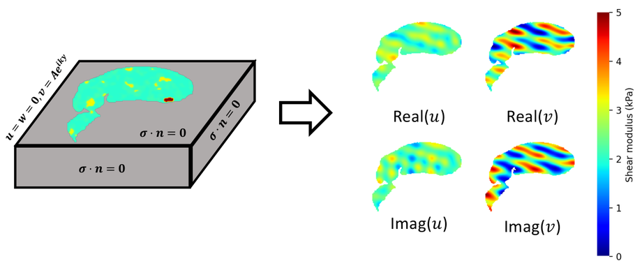
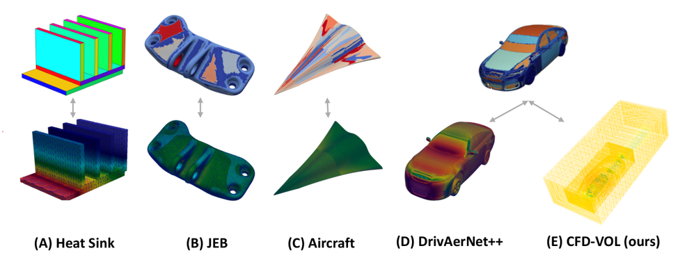
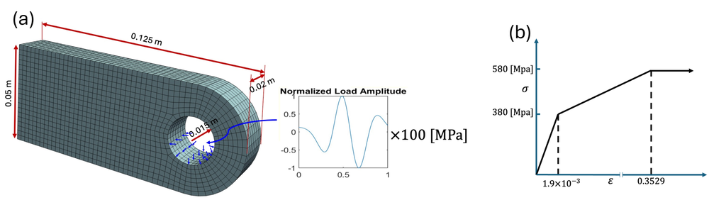
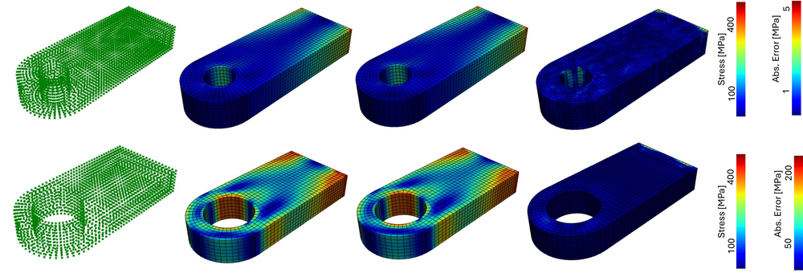
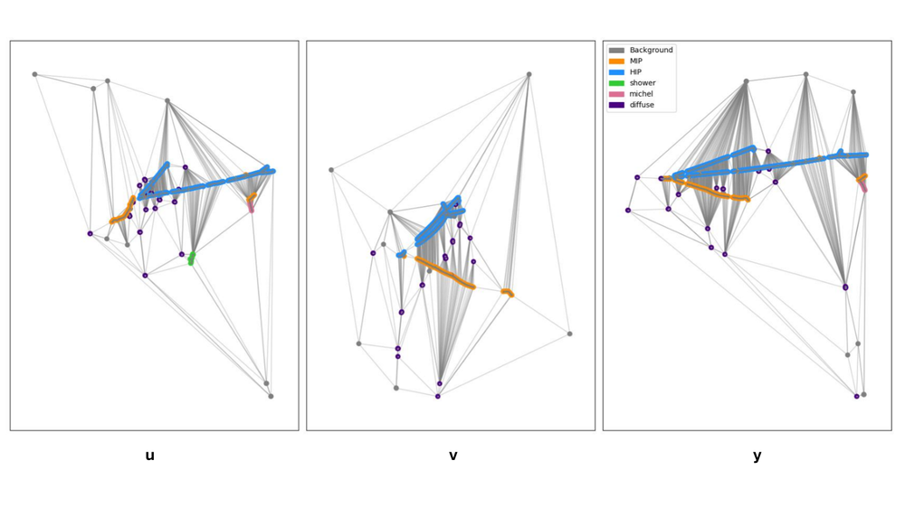
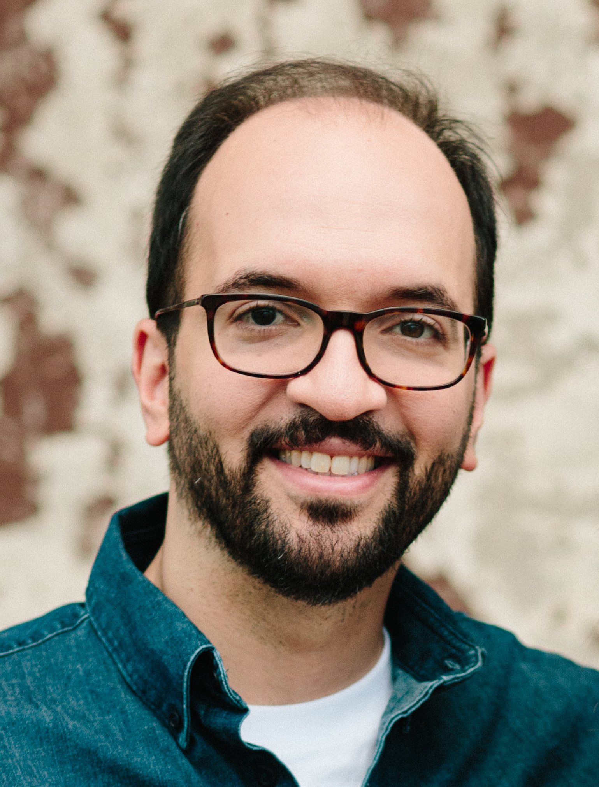

AI-driven scientific computing for engineering systems.
We combine machine learning with physics-based modeling to develop computationally efficient, physically meaningful, and interpretable methods that accelerate engineering design, build digital twins for infrastructure, and advance physics simulation.
AI surrogates for vehicle design predict the full surface pressure over a vehicle body, matching high-fidelity CFD down to fine detail around the side mirror and windshield.
Traffic network digital twins built on end-to-end heterogeneous graph neural networks deliver real-time traffic assignment and transportation network analysis.
AI surrogates for mitral valve dynamics predict the deforming leaflet surface through the closing cycle, closely matching finite-element simulation.





Code from our published research, released for the community to build on.
Central repository of research code released alongside our publications — surrogate models, PINNs, and GNN implementations.
Official implementation of PGD-NO (ICML 2026), a neural operator with precomputed geometry decomposition for 3D million-scale physics simulations.
A fair comparison of neural operator architectures — point-, grid-, graph-, and branch-trunk-based — on 3D real-world engineering problems, with pretrained models.
A benchmark for neural operators on magnetic resonance elastography (MRE) inversion, with high-fidelity FEniCSx simulations and data-driven and physics-informed baselines.
Dr. Meidani an Associate Professor in the Department of Civil and Environmental Engineering, and Department of Biomedical & Translational Sciences at the University of Illinois at Urbana-Champaign. He got my Ph.D. in Civil Engineering from USC under the advice of Prof. Roger Ghanem. He also got a M.Sc. in Electrical Engineering from USC, a M.S. in Structural Engineering from Sharif University of Technology, and a B.S. in Civil Engineering from K.N. Toosi University of Technology. Prior to joining UIUC, he was a postdoctoral scholar in the Department of Aerospace and Mechanical Engineering at USC and in the Scientific Computing and Imaging Institute at the University of Utah. Dr. Meidani is the Chair of the Machine Learning Committee of the ASCE Engineering Mechanics Institute. He is the recipient of an NSF CAREER Award on fast computational models for infrastructure networks. His team have won awards from data competitions on railroad engineering and his research has been sponsored by federal agencies such as National Science Foundation (NSF), DOE, and DOT.
